«Высшая проба» Round 2 · Задание 4: one word in capitals, one gap, the right form
📅 11 November 2026 · Lesson 17 · trains Задание 4 (word formation), Задания 9 and 10 · vocabulary V12: culture, arts & media · history era 6: the 19th century · culture: the Victorian writers
Blocks checked: 0 / 0
Points today: 0 / 0
👩🏫 Teacher only · Lesson 17 plan · 90 min (tap to open / close)
The thread: the 18th century retold and three of its people recalled → Задание 4: what part of speech does the gap need, and which suffix makes it → the V12 culture words as word families → a timed Задание 4 text on Turner → feelings and causes (-ed / -ing), suffix choice, negative prefixes, an Olympway text on beauty → the 19th century in five minutes → the Victorian writers: taught on cards first, then decoded, then a full Who is it? on Conan Doyle.
0–8 · Warm-up: the 18th century without the timeline (3) · three people from Lesson 16 (2) · six words from V8–V11 (3). Check the Defoe Задание 9 and answer her five weather statements while she retells, or at the end.
8–43 · Block A, word families: the demo Задание 4 again (5) · the rule box (4) · V12 families: read the table (5), then 10 gaps (7) · one root, three forms, Olympway (6) · Задание 4 on Turner, timed (6) · buffer (2).
43–47 · Break.
47–72 · Block B, -ed / -ing and suffixes: the rule (2) · 8 feelings and causes (4) · 10 suffix gaps (6) · 8 negative prefixes (4) · Olympway 195 on beauty, 8 gaps (9). If it is after 64’ before Olympway 195, press 📚 Move to homework on it.
72–77 · History: 1861 hook (1) · six names of the century (2) · centuries (2).
77–88 · Culture: how to decode (1, it’s a reminder now) · meet the eight writers (4) · decode the clue + pen names (3) · Who is it? Arthur Conan Doyle (3).
88–90 · Homework: open the Homework tab together.
👩🏫 Teacher only · Lesson notes: what this lesson teaches and why (tap to open / close)
1 · Where this lesson sits
Задание 4 is worth only 5 points, but it is the task where she can be fastest and most certain, and its skill (seeing what part of speech a gap needs) also decides points in Задания 1, 2 and 3. In the demo the five answers were commercial, mysterious, thrilling, measurements, horrified: three adjectives, one plural noun, one -ed feeling. That spread is typical. Nothing in the task tests rare vocabulary; every root is a word she knows (commerce, mystery, thrill, measure, horror). The points are lost on the form: mystery → mysterious (y → i), thrill → thrilling not thrilled, measure → measurements with the plural after make. So the lesson trains one question, asked before any spelling: what does the gap need?
This is also the culture lesson: the V12 words (compose, exhibit, inspire, depict, adaptation…) are taught as word families, and every practice sentence and text is about the painters and writers she is meeting in V14. The vocabulary carries the culture and the culture carries the vocabulary.
2 · Block A: the gap decides the form
The procedure (card 4 from Lesson 10) has four steps: (1) part of speech from the words around the gap; (2) plural? negative?; (3) feeling -ed vs cause -ing; (4) spelling. The signals she needs are few: article/possessive + ___ + noun → adjective (the main commercial thoroughfare); article/possessive + ___ (+ of) → noun; be / seem / become / find it + ___ → adjective; ___ + verb or adjective, or the end of a clause → adverb; a number, many, some, make → maybe plural. The rule box lists the suffixes by part of speech, because the suffix is how she checks her answer: if the gap needs an adjective and she wrote -ment, it’s wrong.
The V12 family table is the teaching step for the new deck: ten roots with their Russian and their family. She reads it with you before the gaps; the ten sentences then use only those families. Traps on purpose: imagination (noun, not imaginative), compositions (plural after one of the), critical (adjective from critic, not criticism), aesthetically (adverb before an adjective: -ally).
The Olympway warm-ups (203, 211, 214, 207) give one root in three sentences. They are hard (the source texts are 19th-century prose), which is why they are useful: she must use the grammar, not the meaning. Expect her to miss causative and disclaimer; the point is that she gets the part of speech right even when she can’t spell the word. Mark that aloud: “noun, right; suffix, not yet.”
The Turner text is the full format, timed: exceptional, confusing, admirers, industrial, secretly. Gap 2 (found this new style deeply confusing) is the -ed/-ing trap before Block B teaches it; if she writes confused, leave it: Block B will explain it. Gap 3 needs a plural person noun after one of his.
3 · Block B: feelings, causes and suffix choice
-ed vs -ing is the most common Задание 4 trap after plurals: the person feelshorrified; the thing ishorrifying. In the demo both kinds appear (thrilling stories, a horrified expression: the expression shows a feeling). The 8 practice lines alternate. Then suffix choice: ten roots she knows, each needing a different suffix (-ful, -al, -ive, -ous, -less, -ment, -ity, -ness, -tion) and one spelling change (fame → famous, the e drops). Negative prefixes: the pattern is im- before p/m/b, il- before l, ir- before r, otherwise usually un- or in-; dis- and mis- with verbs. Olympway 195 (an essay on beauty, fits the theme) is the hard text: appearance, attractive, unimportance, occasional, curiosity, freedom, treatment, incoherent. Two of them need a prefix and a suffix; that is the C1 level of Задание 4.
4 · History, era 6: the 19th century
The story at home is one chain: 1803 Jefferson buys Louisiana from Napoleon → 1805 Trafalgar, Nelson killed → 1815 Waterloo, Wellington → 1830 the Liverpool–Manchester railway (Stephenson) → 1837 Victoria, 18 years old, reigns until 1901 → 1848 gold in California, the forty-niners → 1851 the Great Exhibition → 1859 Darwin’s On the Origin of Species → 1861 the Civil War (and the serfs freed in Russia) → 1863 Lincoln frees the slaves in the South → 1865 the North wins, Lincoln shot → 1867 Alaska bought from Russia → 1876 Victoria, Empress of India. In class she only meets six names with one fact each, then matches paraphrased clues. The hook is 1861: Alexander II frees the serfs and America goes to war over slavery; both leaders were later assassinated (Lincoln 1865, Alexander II 1881). For Задание 10 the anchors are 1815, 1837, 1861 and 1901; the trap is 1801–1900 = the 19th century but 1901 is the 20th.
5 · Culture: the Victorian writers (the 🎭 Culture tab)
The largest group of the course, and the one Olympway asks about most. Eight are taught in class: Austen (Pride and Prejudice; published “By a Lady”), the Brontës (Haworth; Jane Eyre, Wuthering Heights, Agnes Grey; Currer, Ellis and Acton Bell), Dickens (the shoe-polish factory; Oliver Twist, A Christmas Carol; “Boz”), Lewis Carroll (Charles Lutwidge Dodgson; Christ Church, Oxford; Alice Liddell; the boat trip on the Thames, called the Isis at Oxford, 4 July 1862), Conan Doyle (Edinburgh doctor; Holmes, 221B Baker Street; the Reichenbach Falls), Wilde (Dublin; Dorian Gray, The Importance of Being Earnest, The Canterville Ghost), George Eliot (Mary Ann Evans; Middlemarch) and Mark Twain (Samuel Clemens; the Mississippi; “mark twain” = 12 feet of water). Five more go home: Turner, Constable, Poe, Whitman, Emily Dickinson. She already met Turner today in the Block A text, so his card at home will feel familiar.
The pen-name drill is where Задание 9 hides its lateral questions: in the demo, “Twain’s real name” was one answer. Eight pairs, all from today’s cards. The Who is it? is Conan Doyle: Edinburgh + medicine + a teacher who read people’s lives from their hands → Holmes. Two of the three answers are not in the text (Baker Street, the Reichenbach Falls), but both are on his card.
Homework Задание 9 is Lewis Carroll, and all five answers are outside the text: the pen name, the real name (Charles Lutwidge Dodgson), the girl (Alice Liddell), the river (the Thames; the Isis is accepted) and the title (Alice’s Adventures in Wonderland). Everything is on his card. The text explains the pen-name trick (two first names → Latin → reversed → English) without giving the result: if she can decode that, she has the main Задание 9 skill.
6 · Homework and the Olympway checks
The core hour: decks V12 and V14 (now 25 cards, each with a portrait and a fuller description on the back), two Задание 4 texts (the Brontës: tragic, imaginary, disappointing, success, identity; Dickens: humiliation, originally, excitement, poverty, unforgettable), the 19th-century story, five home cards, the Carroll text. Imaginary vs imaginative is the planned trap in the Brontës text: imaginary = not real; imaginative = full of ideas.
The Olympway checks of era 5: task 222 (five of its ten dates: 1727, 1768, 1773, 1830, 1876; the last two are from today’s story) and task 175 (the Declaration of Independence as an error text). From 175 I kept only the lines she can correct from grammar, vocabulary or what she was taught (thirteen colonies, draft, term, declare independence, signed). Lines 4, 5 and 9 need facts she was never taught (the vote on 2 July, the Committee of Five, Abigail Adams), so they are left out. Left out on purpose: task 226 (five of the seven Founding Fathers were never taught), task 102 (only Poe and Conan Doyle of its ten detective writers are taught) and the Woolf and Hardy items of task 301. Task 301 is used with its Wilde, Dickens and Charlotte Brontë passages, and task 190 (word formation) with ten of its fifteen gaps.
7 · Next lesson
Warm-up: the 19th century retold without the timeline, then 3 V14 cards (Carroll, the Brontës, Twain). Check the Carroll key: Lewis Carroll · Charles Lutwidge Dodgson · Alice Liddell · the Thames (Isis) · Alice’s Adventures in Wonderland. Lesson 18 is mind & society with Задания 3 and 6, era 7 (the 20th century) and the 20th-century figures (Orwell, Tolkien, Christie…).
👩🏫 Teacher only · what to say · warm-up
Hello: “Last time you retold the 18th century with the timeline. Today without it: Anne, the Georges, Walpole, then America and Australia. Two minutes.”
Three people: “Three people from last lesson’s cards. The clue is written the way Задание 9 would write it.” If she misses one, she says which 🔎 clue should have told her.
Six words: “Six random words from the four decks you have. Every word you miss → a sentence of your own.”
Homework check (Defoe, Задание 9): key 1 Daniel Defoe · 2 Robinson Crusoe · 3 Friday · 4 Robinson Crusoe Island · 5 Chile. “All five answers were outside the text. Which clue gave you the name?” Then answer her five weather statements (True / False) and ask which trap each one used.
Into Block A: “Today’s exam task is the shortest one, Задание 4: five gaps, a word in capitals, change its form. It’s quick points if you ask one question first: what does the gap need?”
Warm-up 1 · from Lesson 16 · 3 min
The 18th century, without the timeline
Retell the story aloud in about two minutes: the Act of Union → George I → Walpole → the thirteen colonies → the Tea Party → 1776 → Washington, then Cook and Australia. Tap each word or link when you use it.
meanwhile… years laterwas / were + V3no taxation without representationbreak outcolonyPrime Ministerindependence
0 / 5 used
👩🏫 Teacher only · listen for
1707 Act of Union, Great Britain · 1714 Anne dies, George I of Hanover (little English) · 1721 Walpole, first Prime Minister; 1735 10 Downing Street · 1754–63 French and Indian War, France loses Canada · new taxes, no taxation without representation · 1773 Boston Tea Party · 1775 fighting breaks out · 4 July 1776 the Declaration (Jefferson) · 1783 Britain recognises the USA · 1789 Washington, first President · 1770 Cook, 1788 the First Fleet, Sydney Cove · George III 1760–1820.
Warm-up 2 · three people from Lesson 16 · 2 min
Who is it?
Each clue is written the way a Задание 9 text would write it. Two people in the box are extra.
Jonathan SwiftGeorge Frideric Handel
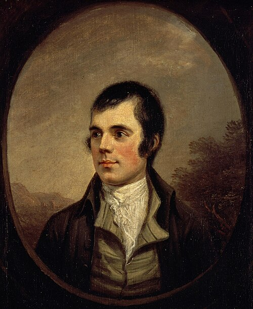
Robert Burns
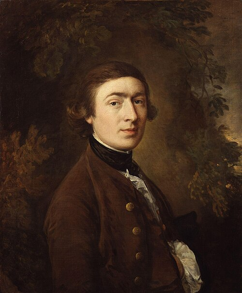
Thomas GainsboroughDaniel Defoe
Drag a person to a clue, or tap the person and then the clue. Tap a filled clue to empty it.
Russian readers know his songs through Samuil Marshak’s translations.1
The son of a candle-maker, he wrote his first novel when he was nearly sixty.2
His German employer became King of Britain in 1714, and he followed him to London.3
Warm-up 3 · random words from Lessons 11–15 · 3 min
Six random words
Read the Russian and type the English word or phrase. The first letter and the number of letters are shown. Press Check. Then say a sentence of your own with every word you missed.
from History, People, Science and Nature (V8–V11)
🗣The words in context · now make your own sentence
👩🏫 Teacher only · what to say · word families
Discover: “You did this text in Lesson 9. Do it again, fast. Then for each gap tell me: what did the gap need, a noun, an adjective, an adverb? How did you know?” She must point at the word that told her (the main ___ thoroughfare → before a noun → adjective).
Rule box: “Four questions, always in this order: part of speech, plural or negative, feeling or cause, spelling.” Read the suffix columns together. “If the gap needs an adjective and you wrote -ment, you know it’s wrong before you check.”
V12 families: she reads the table aloud, Russian and family. “These are this week’s new words, deck V12. Now ten gaps; every answer is in the table.”
One root, three forms: “These are hard, old texts. I don’t need the perfect word. I need the right part of speech. Say ‘noun’ or ‘adjective’ before you type.”
Turner: “Exam conditions: six minutes, five gaps.” Start the timer. After Check: “Which gap was a plural? Which was a feeling or a cause?”
Into the break: “After the break: bored or boring, the trap that’s in almost every Задание 4.”
Задание 4 · 5 балловfrom the demo paper · Lesson 9
Discover · Teddy Roosevelt and the seal · 5 min
Заполните пропуски в тексте, преобразовав данные в скобках слова таким образом, чтобы они лексически и грамматически соответствовали тексту.
You did this text in Lesson 9. Do it again, then look at why each answer had to be that part of speech.
On his way up Broadway, the city’s main COMMERCE1 thoroughfare, Teddy walked past the street stalls where all kinds of fish, meat, fruits, and vegetables were sold. And that’s when he saw it. There, stretched out on a plank of wood, was the most MYSTERY2 creature Teddy had ever seen: a harbour seal. […] The enormous creature looked like it belonged in the THRILL3 adventure stories he read at bedtime. […] The next day Teddy returned to the market to take another look at the seal and to make MEASURE4. But what he saw instead was an empty display table: the seal was gone. A HORROR5 expression took over Teddy’s face.
🔎What each gap needed, and how you could tell
1 commercial: the city’s main ___ thoroughfare: between an adjective and a noun → adjective. commerce → commercial.
2 mysterious: the most ___ creature: superlative + noun → adjective. mystery → mysterious (y → i).
3 thrilling: the ___ adventure stories → adjective. The stories cause the thrill → -ing.
4 measurements: to make ___ → noun; you make more than one → plural.
5 horrified: A ___ expression → adjective. The face shows what Teddy feels → -ed.
The rule · 4 min
What does the gap need? Then which suffix?
🧩 Задание 4 in four questions
Ask them in this order, before you write anything.
1Which part of speech?
Look at the words next to the gap.
the + ? + noun→adjectivethe main commercial street
the + ? + of→nounthe development of industry
be / seem / find it + ? →adjectiveit was controversial
? + verb / adjective→adverboriginally published
2Plural? Negative?
Read the whole sentence, not just the gap.
make / many / one of the→+ sto make measurements · one of his admirers
the meaning is “not”→prefixunforgettable · impossible · irregular
🇷🇺 Сначала определите часть речи по соседним словам (артикль + ___ + существительное = прилагательное), и только потом подбирайте суффикс. Проверьте, не нужно ли множественное число или отрицание, и не забудьте про орфографию: в Задании 4 ошибка в одной букве = 0 баллов.
New words · deck V12 · culture, arts & media · 5 min
Ten culture words and their families
Read the table aloud: the word, the Russian, then its family. These words are in deck V12. The next task uses only these families.
V12 word
Russian
Family
compose (v)
сочинять (музыку)
composer (person) · composition (a piece of music; plural compositions)
CLAIM: claimant (the person who claims) · disclaimer (a notice that refuses responsibility).
Задание 4 · 5 баллов5 gaps · 6 min
Practice 3 · The painter of light
Заполните пропуски в тексте, преобразовав данные в скобках слова таким образом, чтобы они лексически и грамматически соответствовали тексту.
⏱ 6 min, exam pace① part of speech first✍️ spelling counts
The painter of light
Joseph Mallord William Turner was born in 1775 above his father’s barber’s shop in Covent Garden, London. His father was immensely proud of the boy: he hung his early drawings in the shop window and sold them to customers. At fourteen Turner became a student at the Royal Academy, an EXCEPTION1 achievement for a barber’s son.
He travelled all over Britain and later Europe with a sketchbook in his pocket. He was fascinated by the sea, by storms and, above all, by light. In his later paintings the outlines of ships and buildings almost disappear in clouds of colour, and many critics found this new style deeply CONFUSE2. One of them called a picture “soapsuds and whitewash”. Turner did not care, and one of his greatest ADMIRE3, the young critic John Ruskin, wrote a whole book to defend him.
The INDUSTRY4 age fascinated him as much as nature did. In Rain, Steam and Speed (1844) a train races towards the viewer across a bridge over the Thames. In The Fighting Temeraire a small black steam tug pulls an old warship that had fought at Trafalgar to be broken up, while the sun sets behind it.
Turner never married, and in his last years he lived SECRET5 in a small house in Chelsea, where his neighbours knew him as “Mr Booth”. When he died in 1851 he left about three hundred oil paintings and thousands of drawings to the nation. Today his self-portrait is on the £20 note.
🔎The signal for each gap
1 exceptional: an ___ achievement → adjective. exception → exceptional; an already tells you the word starts with a vowel.
2 confusing: found this new style deeply ___: the style causes the confusion → -ing. The critics felt confused.
3 admirers: one of his greatest ___ → a person noun, plural.
4 industrial: The ___ age → adjective. (Industrious = hard-working: a different word.)
5 secretly: he lived ___ in a small house: how he lived → adverb.
👩🏫 Teacher only · what to say · -ed / -ing and suffixes
The rule: “Who feels it? -ed. What makes you feel it? -ing. A boring teacher makes bored students.” Ask her for one pair about a film she has seen.
Feelings and causes: after each answer she names the person who feels it. If she says “the painting feels confused”, she sees the mistake herself.
Suffixes: “Ten roots you know, ten different suffixes. The sentence tells you the part of speech; the table tells you the ending.”
Prefixes: “im- before p, m, b; il- before l; ir- before r. Dis- and mis- like verbs.”
Olympway 195: “A very old essay about beauty. Read past the hard words. Only the gaps matter.” If it is after 64’, press 📚 Move to homework.
Into history: “Last time: the Georges and a new country in America. Today the century of steam, Queen Victoria and a war in America. Same year in Russia: what happened in 1861?”
The rule · 2 min
Bored or boring?
😮 -ed = how a person feels · -ing = what causes the feeling
Verb
-ed: the person feels
-ing: the thing causes it
fascinate
Visitors were fascinated by the paintings.
The paintings were fascinating.
disappoint
The poets were disappointed by the sales.
Two copies sold: a disappointing start.
horrify
Teddy had a horrified expression.
a horrifying story
inspire
an inspired composer
an inspiring teacher
Watch out: a face, a look, a voice or an expression shows a feeling, so it takes -ed: a horrified expression, a surprised look, a bored voice.
🇷🇺 -ed — что чувствует человек (I was bored — мне было скучно). -ing — что вызывает это чувство (the film was boring — фильм был скучным).
Practice 4 · feelings and causes · 4 min
Choose the right form
1The audience was ___ by the ending of the play and sat in silence.
2Many visitors find Turner’s late paintings ___: where is the ship?
3After six hours in the museum, we were completely ___.
4Handel’s Hallelujah chorus is so ___ that the audience stands up.
5He gave the critic an ___ look and left the room.
6The story of the shipwrecked sailor is ___ from the first page.
7Children who are ___ at school often stop listening.
8Burns’s first book was an ___ success: nobody expected a farmer to become famous.
🔎Who feels it?
-ed: 1 the audience feels the shock · 3 we feel tired · 7 the children feel bored · 5 the look shows his feeling.
-ing: 2 the paintings cause confusion · 4 the music moves people · 6 the story grips the reader · 8 the success astonished everyone.
Practice 5 · suffix choice · 6 min
Ten roots, ten endings
Part of speech first, then the suffix from the rule box in the 🧩 tab. Watch the spelling.
1Her first novel was so SUCCESS ___ that the publisher asked for another at once.
2Hearing the Water Music on the river must have been a MAGIC ___ evening.
3She was a quiet girl, but a very CREATE ___ one: she wrote whole books for her toy soldiers.
4In the 19th century, working in a factory was DANGER ___, especially for children.
5The snake looks frightening, but in fact it is completely HARM ___.
6The railway played a huge part in the DEVELOP ___ of British industry.
7The POPULAR ___ of detective stories grew enormously in the 1890s.
8He painted the storm in the DARK ___ of a winter afternoon.
9Constable won little RECOGNISE ___ in England during his lifetime.
10Stratford-upon-Avon is FAME ___ as the birthplace of Shakespeare.
🔎Signal → suffix
Adjectives after so / a / was / is: successful, magical, creative, dangerous, harmless, famous (the e drops).
Nouns after the ___ of or little: development, popularity, darkness, recognition (recognise → recognition: the s becomes t).
Practice 6 · negative prefixes · 4 min
Which prefix makes it “not”?
Look at the first letter of the word, then choose the prefix. The sentence shows how the word is used.
im-before p · m · bimpossible · immature
il-before lillegal · illiterate
ir-before rirregular · irrelevant
un-in-most adjectivesunexpected · invisible
dis-verbs and some adjectivesdisappear · dishonest
mis-“wrongly”, with verbsmisunderstand
1___possibleWren thought nothing was …possible: he rebuilt fifty churches.
2___expectedThe book had an …expected ending.
3___legalCopying another artist’s prints was made …legal by Hogarth’s Act.
4___appearLines of ships and buildings seem to …appear in his late paintings.
5___regularPoems with …regular rhymes and lots of dashes.
6___understandReaders often …understand satire and take it seriously.
7___visibleThe real author remained …visible behind a man’s name.
8___honestCritics called the painter …honest, but he was only experimenting.
🔎Why each prefix
The first letter decides: impossible (p) · illegal (l) · irregular (r).
Adjectives: unexpected, invisible. There is no rule for un- or in-: learn them as words.
Verbs: disappear (the opposite), misunderstand (understand wrongly). Dishonest is one of the adjectives with dis-.
Olympway 195 · an essay on beauty · 9 min
The sense of beauty
Eight gaps from an essay written in 1896. Read past the hard words: only the gaps matter. Two of the answers need a prefix and a suffix.
In all products of human industry we notice how strongly the eye is attracted to the mere APPEAR1 of things. Of late we have even learned that the forms of many animals are due to the survival by selection of the colours and forms most ATTRACT2 to the eye.
That aesthetic theory has received so little attention is not due to the IMPORTANT3 of the subject, but rather to the small success of the OCCASION4 efforts to deal with it. Absolute CURIOUS5, and love of understanding for its own sake, are not passions we have much time to indulge: they require FREE6 from everyday affairs.
A TREAT7 of the subject at once direct and theoretical has been very rare, and reflection upon aesthetic experience has remained weak or COHERENT8.
🔎The signals
1the mere ___ of → noun: appearance. 5Absolute ___ → noun: curious → curiosity (the u drops). 6require ___ from → noun: freedom. 7A ___ of the subject → noun: treatment.
2most ___ to the eye → adjective: attractive. 4the ___ efforts → adjective: occasional.
3not due to the ___ of the subject, but…: the writer says the subject is important, so the reason is not its unimportance → unimportant → unimportance.
8weak or ___: two negative ideas joined by or → incoherent.
👩🏫 Teacher only · what to say · history
Hook: “1861. In Russia, the tsar signs a paper that changes the lives of twenty million people. Do you know what?” (the serfs freed) “And in America a war starts over a similar question. Both leaders were later killed.”
Six names: “Six people, one fact each. Read the cards, then match. The full story is at home.”
Centuries: “Five events from all six eras. One minute.” Push for speed. Trap: 1901 is the 20th century.
Into culture: “Now the writers who lived in this century. There are a lot of them, and Olympway loves them.”
Close (after the Culture tab): “Open the Homework tab.” Go through the checklist: V12 and V14, two Задание 4 texts, the story, five more cards, the Carroll text in 7 minutes, Olympway checks.
In class · 5 min
Hook · 1 min
1861: freedom in two countries
1861
The serfs are freed · Russia
Alexander II signs the Emancipation Manifesto: about 23 million serfs become free.
1861
The Civil War begins · America
Eleven Southern states leave the Union over slavery; President Lincoln goes to war to keep the country together.
Read the two cards. Is each fact about Russia, America, or both?
1Millions of people were freed by a decree of the ruler.
2It happened in 1861.
3Part of the country tried to leave and form its own state.
4The leader of the country was later assassinated.
🇷🇺🇺🇸The link between them
Alexander II freed the serfs on 3 March 1861 (19 February, old style). Five weeks later, in April, the American Civil War began. Lincoln declared the slaves in the South free in 1863; the North won in 1865, and days later Lincoln was shot in a theatre in Washington. Alexander II was killed by a bomb in St Petersburg in 1881.
The spine · six names of the century · 2 min
The last Hanoverians, and six people you need
The house of Hanover, 1714–1901
George IIIto 1820→George IV1820→William IV1830→Victoria1837–1901
Thomas Jefferson · 1803 as President, bought Louisiana from Napoleon’s France and doubled the USA
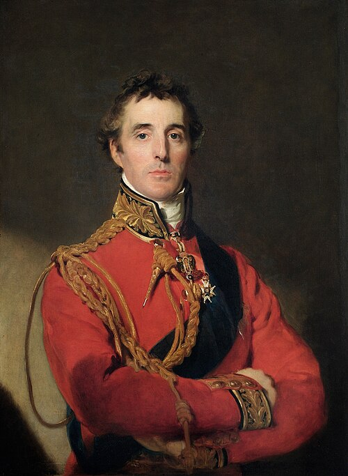
the Duke of Wellington · 1815 defeated Napoleon at Waterloo (in today’s Belgium)
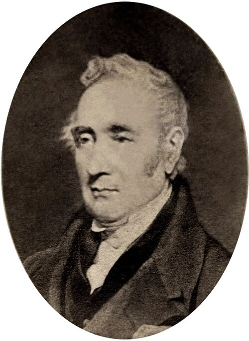
George Stephenson · 1830 engineer of the first railway between two cities, Liverpool and Manchester
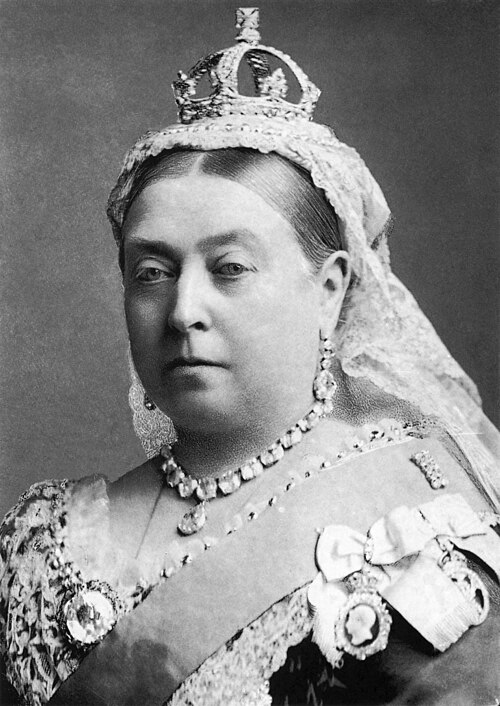
Queen Victoria · 1837–1901 queen at 18 for almost 64 years; Empress of India from 1876
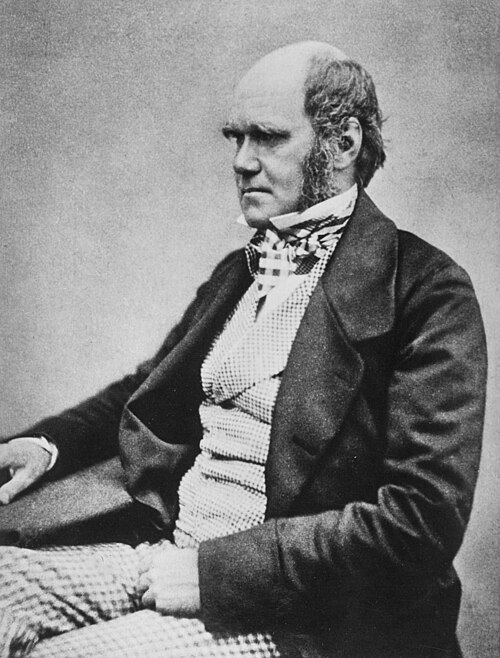
Charles Darwin · 1859 On the Origin of Species: the theory of evolution
Abraham Lincoln · 1861–65 President in the Civil War; freed the slaves; shot in 1865
Now match each clue to a person.
Queen VictoriaCharles DarwinThomas JeffersonGeorge Stephensonthe Duke of WellingtonAbraham Lincoln
Drag a person to a clue, or tap the person and then the clue. Tap a filled clue to empty it.
His engines pulled the trains on the first line that joined two big cities.1
He led his country through a war between the North and the South.2
He beat the French emperor for the last time, in 1815.3
A whole era is named after her.4
His book explained how living things change over millions of years.5
He bought a huge territory from France and made his country twice as big.6
Задание 10 format5 events · 7 centuries
Events and centuries · 2 min
Соотнесите события, значимые для стран(ы) изучаемого языка, и века, в которых эти события происходили. Два века не соответствуют ни одному событию.
🧠 eras 1–62 centuries are extra
1King John agrees to Magna Carta
2The Battle of Waterloo
3Columbus reaches America
4The Gunpowder Plot
5The Declaration of Independence
💡Hint · first two digits + 1
1215 → 13th. 1815 → 19th. 1492 → 15th. 1605 → 17th. 1776 → 18th. Not used: 11th and 16th.
Careful at the edges: 1801–1900 is the 19th century, so Victoria’s death in 1901 is already the 20th.
At home · 20 min
Step 1 · Listen once · 3 min
The 19th century: steam, an empire and a war
Read the statements first and underline the trap words (both, only, all, because). Then listen once without stopping and decide if each statement is True or False.
🎧 once, no stopping✅ True / ❌ False⏱ 2 min audio
1Jefferson bought Louisiana from Spain.
2Victoria reigned for more than sixty years.
3All readers welcomed Darwin’s book.
4Most of the gold-seekers arrived in California the year after gold was found.
5Lincoln died before the Civil War ended.
💡Hint · the traps
1 (opposite): from Napoleon’s France. 3 (normally / always): the book shocked many readers, so not all welcomed it.
4: the next year about ninety thousand people rushed there: the forty-niners came in 1849. 5: Lincoln was shot only days after the end of the war.
Step 2 · Read and place · 5 min
Put the story on your timeline
Now read the story. The time expressions are the links you need for Задание 5. Four dates are not written: count them from two years later, ten years after Trafalgar, seven years later and two years after his death. Then drag each event to its date (or tap the event, then the date).
The 19th century: steam, an empire and a war
In 1803 the young United States doubled its size almost overnight: President Thomas Jefferson bought the huge territory of Louisiana from Napoleon’s France for fifteen million dollars. Meanwhile, in Europe, Britain was at war with Napoleon. Two years later Admiral Nelson destroyed the French and Spanish fleets at Trafalgar, but he was killed in the battle. Ten years after Trafalgar, the Duke of Wellington and his Prussian allies finally defeated Napoleon at Waterloo, in what is now Belgium.
At home, Britain was changing faster than any country had changed before. Factories, mines and canals spread across the north, and in 1830 the world’s first railway between two cities, Liverpool and Manchester, was opened; its engines were built by George Stephenson and his son. Seven years later an eighteen-year-old princess, Victoria, came to the throne. She reigned for almost sixty-four years, until 1901, and the whole period is called the Victorian era. In 1851 the Great Exhibition in the Crystal Palace showed off British industry to the world, and eight years later Charles Darwin published On the Origin of Species, which shocked many readers. In 1876 Victoria was given a new title, Empress of India, and by the end of her reign the British Empire covered about a fifth of the world’s land.
Across the Atlantic, Americans were moving west. In 1848 gold was found in California, and the next year about ninety thousand people rushed there: they were called the “forty-niners”. But the country was divided over slavery. In 1861, the same year that Alexander II freed the serfs in Russia, the Southern states left the Union and the Civil War broke out. President Abraham Lincoln declared the slaves in the South free in 1863, and the North won two years later, but only days after the end of the war Lincoln was shot in a theatre in Washington. Two years after his death, the United States bought Alaska from Russia for 7.2 million dollars.
Darwin publishes On the Origin of SpeciesVictoria comes to the thronethe Battle of Trafalgarthe USA buys Alaska from Russiagold is found in Californiathe Louisiana PurchaseVictoria becomes Empress of Indiathe Liverpool–Manchester railway opensthe Civil War breaks outthe Battle of Waterloo
Drag an event to a date, or tap an event and then tap the date. Tap a filled date to empty it.
18031
18052
18153
18304
18375
18486
18597
18618
18679
187610
Step 3 · Say it · 2 min
Retell the story aloud, with your timeline in front of you
Two minutes, out loud: the wars with Napoleon, then steam and Victoria, then America. Use at least two time links (meanwhile, ten years after, the next year) and two passives (the railway was opened, Lincoln was shot). Next lesson you’ll retell it without the timeline.
reignempirewas / were + V3meanwhile… years laterbreak outdefeatdeclare
0 / 5 used
👩🏫 Teacher only · what to say · culture
Start: “The seven kinds of clue from last time. Which one will be the most useful today?” (name puzzles: half of today’s writers used another name).
Meet the figures: she reads each card aloud: name, one work, one 🔎 clue. Stop on the name puzzles: “Lewis Carroll is not his real name. What is?” Don’t ask her to memorise the cards now; the deck at home does that.
Decode the clue: one clue, one name, fast. If she hesitates, she finds the card and reads the clue that matches.
Pen names: “One minute. Eight pen names, eight real people.” This is the drill from the plan; repeat it at the start of next lesson if she needs longer than a minute.
Who is it?: “Collect the clues first: city, job, his teacher, the waterfall.” After the answer: “Which two answers were not in the text? Where did you find them?” (on his card).
Close: “At home: five more people (a painter you met in the Turner text, another painter and three Americans), the deck, and a full Задание 9 text about one of today’s writers.”
In class · 11 min
How to decode a person · a reminder · 1 min
Seven kinds of clue in a Задание 9 text
Clue
What the text says (today’s writers)
1 · Dates
born in 1859, died at only 30 → which century, which era?
2 · Place
a village on the Yorkshire moors, the capital of Scotland, a town on the Mississippi
3 · Job and family
a clergyman’s daughter, a maths lecturer, a doctor with few patients, a river pilot
4 · Works, without titles
a girl who follows a white rabbit, a portrait that grows old, a miser visited by three ghosts
5 · People around them
the daughter of the head of his college, a teacher who could read people, her brother, who painted the three sisters
6 · Name puzzles
a man’s name on a woman’s novel, two first names turned into Latin and back, a river call for 12 feet of water
7 · Things named after them
a famous address in London, a museum in a parsonage, a bank note
Then the questions. Mark the ones the text can’t answer: usually the title of a work that was only described, a real name behind a pen name, the modern name of a place, or a word with a second meaning.
Meet the figures · the 19th century · 4 min
Eight writers of the age of Victoria
Read each card aloud: the name, one work, and one 🔎 clue. The 🔎 lines are how a Задание 9 text would describe the person without the name.
Portraits: Wikimedia Commons (public domain).
sketch by her sister Cassandra, c. 1810
Jane Austennovelist · 1775–1817
Джейн Остин · born in Steventon, Hampshire
Know:Pride and Prejudice (1813: Elizabeth Bennet and Mr Darcy), Sense and Sensibility, Emma, Persuasion. Six novels about young women, money and marriage, full of irony.
Unusual: a clergyman’s daughter who never married. Her name never appeared on her books while she was alive: the first was signed “By a Lady”. She is buried in Winchester Cathedral and has been on the £10 note since 2017.
🔎 Clues in a text: a clergyman’s daughter from Hampshire · lived in Bath and Chawton · novels “By a Lady” · a proud rich gentleman and a clever second daughter · five sisters who must marry · buried in Winchester
Lateral: the famous first line: “It is a truth universally acknowledged…” (Pride and Prejudice).
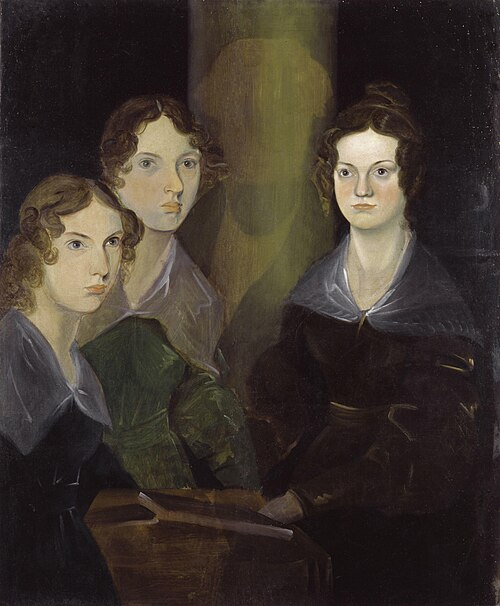
Anne, Emily and Charlotte, by their brother Branwell, c. 1834
the Brontë sistersnovelists · 1816–1855
сёстры Бронте · Charlotte, Emily and Anne · grew up in Haworth, Yorkshire
Know: Charlotte: Jane Eyre (1847: a poor governess and Mr Rochester). Emily: Wuthering Heights (1847: Heathcliff and Cathy on the moors). Anne: Agnes Grey, The Tenant of Wildfell Hall.
Unusual: daughters of a poor clergyman; as children they wrote tiny books about imaginary kingdoms. They published under men’s names: Currer, Ellis and Acton Bell. Their book of poems sold two copies. All three died young; their house is now the Brontë Parsonage Museum.
🔎 Clues in a text: three sisters · a parsonage on the Yorkshire moors · a clergyman father · governesses · a brother who painted them and then painted himself out · the same surname, three different first names · 1847
Lateral: who was who: Currer = Charlotte, Ellis = Emily, Acton = Anne (the same first letters).
photograph by Jeremiah Gurney, 1867
Charles Dickensnovelist · 1812–1870
Чарльз Диккенс · born in Portsmouth
Know:Oliver Twist (an orphan from the workhouse; Fagin’s gang of pickpockets), A Christmas Carol (Ebenezer Scrooge and three ghosts), David Copperfield, Great Expectations (Pip). The most popular writer of Victorian England.
Unusual: at twelve he pasted labels on pots of shoe polish in a factory while his father was in a debtors’ prison. He signed his first sketches “Boz”. His novels came out in monthly parts, and readers waited for each one. He is buried in Westminster Abbey.
🔎 Clues in a text: a boy in a shoe-polish factory · a father in prison for debt · novels in monthly parts · an orphan who asks for more · a miser who hates Christmas · a journalist who signed himself with a nickname
Lateral: his pen name: Boz; Scrooge’s famous words: “Bah! Humbug!”
self-portrait photograph
Lewis Carrollwriter, mathematician · 1832–1898
Льюис Кэрролл · born in Daresbury, Cheshire · real name Charles Lutwidge Dodgson
Know:Alice’s Adventures in Wonderland (1865) and Through the Looking-Glass (1871). Characters: the White Rabbit, the Mad Hatter, the Cheshire Cat, the Queen of Hearts. The nonsense poem Jabberwocky.
Unusual: a shy maths lecturer at Christ Church, Oxford, and a pioneer photographer. He told the story on a rowing trip on 4 July 1862, on the Thames (at Oxford it is called the Isis), to the three daughters of the head of his college. The middle one, Alice Liddell, asked him to write it down.
🔎 Clues in a text: a clergyman’s son from Cheshire · a mathematics lecturer at Oxford · a stammer · a boat trip on a summer afternoon · a girl with the same name as the heroine · a rabbit with a pocket watch · a pen name made from his first names through Latin
Lateral: Charles Lutwidge → Latin Carolus Ludovicus → reversed → Lewis Carroll.
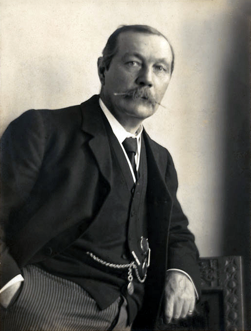
photograph by Walter Benington, 1914
Arthur Conan Doylewriter, doctor · 1859–1930
Артур Конан Дойл · born in Edinburgh, Scotland
Know: the detective Sherlock Holmes and his friend Dr Watson, at 221B Baker Street, London. A Study in Scarlet (1887, the first), The Hound of the Baskervilles. Also The Lost World (dinosaurs).
Unusual: he studied medicine in Edinburgh; his teacher Dr Joseph Bell, who could guess a stranger’s job from his hands, was the model for Holmes. He wrote while waiting for patients. In 1893 he killed Holmes at the Reichenbach Falls in Switzerland; readers were furious, and Holmes came back. Knighted in 1902.
🔎 Clues in a text: born in the Scottish capital · a doctor with few patients · a teacher who “read” people · a detective with a pipe and a violin · his loyal friend, an army doctor · a waterfall in Switzerland · a famous London address
Lateral: Holmes’s enemy, who fell with him: Professor Moriarty.
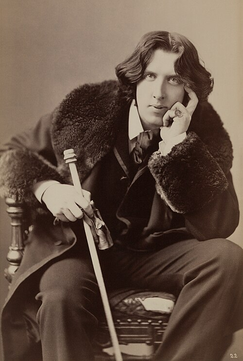
photograph by Napoleon Sarony, 1882
Oscar Wildewriter · 1854–1900
Оскар Уайльд · born in Dublin, Ireland
Know:The Picture of Dorian Gray (1890, his only novel), the comedy The Importance of Being Earnest (1895), the stories The Canterville Ghost and The Happy Prince.
Unusual: the wittiest man in London, famous for his paradoxes and his dandy clothes. In 1895, at the top of his fame, he was sent to prison for two years (The Ballad of Reading Gaol). He died poor in Paris.
🔎 Clues in a text: born in Dublin, studied at Oxford · a portrait that grows old while its owner stays young · an American family who buy a haunted English house · a comedy about two men who both call themselves Ernest · prison · died in Paris
Lateral: the pun in the title: earnest (serious) and the name Ernest.
by François D’Albert Durade, 1849
George Eliotnovelist · 1819–1880
Джордж Элиот · born in Warwickshire · real name Mary Ann Evans
Know:Middlemarch (1871–72: life in a Midlands town), The Mill on the Floss, Silas Marner, Adam Bede.
Unusual: a woman who chose a man’s name so that critics would take her seriously and not write about her private life. Her novels are known for their deep understanding of people.
🔎 Clues in a text: a woman with a man’s name · from Warwickshire · a provincial town and its people · a lonely weaver and a little girl with golden hair · buried in Highgate Cemetery
Lateral: her real name: Mary Ann Evans.
photograph by A. F. Bradley, 1907
Mark Twainwriter · 1835–1910 · USA
Марк Твен · born in Florida, Missouri · real name Samuel Langhorne Clemens
Know:The Adventures of Tom Sawyer (1876) and Adventures of Huckleberry Finn (1884): boys on the Mississippi. America’s great humorist.
Unusual: he grew up in Hannibal on the Mississippi and was a river pilot; “mark twain” was the boatmen’s call for two fathoms (12 feet) of safe water. He went west to Nevada with his brother Orion and became a journalist. Born and died in years of Halley’s comet.
🔎 Clues in a text: a river pilot · a town on the Mississippi · a brother named after a constellation · a journalist in Nevada · a boy who tricks his friends into painting a fence · a comet
Lateral: his real name, and Orion = a constellation (both were in the demo Задание 9).
Decode the clue · 2 min
One clue, one name
Each line is a clue as a Задание 9 text would give it. Who is it? If you’re not sure, find the 🔎 line on the cards above.
Drag a person to a clue, or tap the person and then the clue. Tap a filled clue to empty it.
A clergyman’s daughter from Hampshire; her first published novel was signed only “By a Lady”.1
A shy maths lecturer at Oxford who was also one of the first great amateur photographers.2
Before he became a writer, he steered boats on the Mississippi.3
At twelve he worked in a shoe-polish factory while his father was in a debtors’ prison.4
Three daughters of a Yorkshire clergyman; their book of poems sold two copies.5
A doctor from Edinburgh whose detective lived in Baker Street.6
A woman who chose a man’s name so that critics would take her novels seriously.7
A Dublin-born wit whose hero stays young while his portrait grows old.8
Pen names · 1 min
Who was behind the name?
Every name on the left was printed on a book. Who really wrote it? All eight are on today’s cards.
Mary Ann EvansCharles Dickens
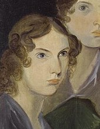
Anne BrontëSamuel ClemensJane AustenCharlotte Brontë
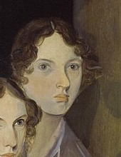
Emily BrontëCharles Lutwidge Dodgson
Drag a person to a pen name, or tap the person and then the name.
Lewis Carroll1
Currer Bell2
Boz3
George Eliot4
Acton Bell5
Mark Twain6
“A Lady”7
Ellis Bell8
Who is it? · a full text · 3 min
A doctor with very few patients
Now a whole text. Collect the clues first (city, job, teacher, waterfall), then answer. Spelling counts.
He was born in 1859 in the capital of Scotland, into a large Irish Catholic family. He studied medicine there, and one of his teachers, a surgeon who could guess a stranger’s job and travels just by looking at him, later became the model for his most famous character. As a young doctor he had so few patients that he began to write stories while he waited for them. His first detective story appeared in 1887, and the stories that followed, published in a London magazine, made his tall, thin detective and the detective’s loyal friend, an army doctor, famous all over the world. In 1893, tired of his hero, the writer sent him over a waterfall in Switzerland together with his greatest enemy. Thousands of readers cancelled their subscriptions to the magazine, and ten years later the detective came back. The writer was knighted in 1902.
1Who is it? (First Name Last Name)
2At what address did his detective live? (not in the text)
3What is the name of the waterfall? (not in the text)
💡Hint · the clues
Edinburgh + medicine + a teacher who “read” people (Dr Joseph Bell) + 1887 + a detective and an army doctor: Sherlock Holmes and Dr Watson.
The magazine was The Strand; the enemy was Professor Moriarty; the falls are near Meiringen, in Switzerland.
At home · 8 min
Meet the figures · two painters and three Americans · 5 min
Five more people of the 19th century
You met Turner in the Задание 4 text today. Read each card, then do the five clues below.
Portraits: Wikimedia Commons (public domain).
self-portrait, c. 1799
J. M. W. Turnerpainter · 1775–1851
Уильям Тёрнер · born in Covent Garden, London
Know:The Fighting Temeraire (1839), Rain, Steam and Speed (1844), Snow Storm. Storms, seas and light: “the painter of light”.
Unusual: a barber’s son who entered the Royal Academy at 14. He left almost 300 oil paintings to the nation (most are in Tate Britain). He is on the £20 note, and Britain’s best-known prize for contemporary art, the Turner Prize, is named after him.
🔎 Clues in a text: a barber’s son · the Royal Academy at fourteen · a warship towed away by a steam tug · a train in the rain · colour without outlines · lived as “Mr Booth” · a modern art prize
Lateral: the critic who defended him: John Ruskin.
by Ramsay Richard Reinagle, c. 1799
John Constablepainter · 1776–1837
Джон Констебл · born in East Bergholt, Suffolk
Know:The Hay Wain (1821, National Gallery): a farm cart in the river Stour; Flatford Mill; Salisbury Cathedral. The English countryside and its skies.
Unusual: a miller’s son who painted the valley of his childhood (“Constable Country”). He painted hundreds of studies of clouds. The Hay Wain won a gold medal in Paris in 1824: French painters admired him more than the English did.
🔎 Clues in a text: a miller’s son from Suffolk · a cart standing in a river · a mill · clouds and skies · Turner’s rival · a gold medal in Paris
Lateral: a wain is an old word for a farm cart.
daguerreotype, 1849
Edgar Allan Poepoet, story writer · 1809–1849 · USA
Эдгар Аллан По · born in Boston
Know: the poem The Raven (the bird says “Nevermore”), The Murders in the Rue Morgue (1841), The Fall of the House of Usher, The Black Cat. Master of horror and mystery.
Unusual: he invented the modern detective story: his detective C. Auguste Dupin solved crimes in Paris 46 years before Sherlock Holmes. An orphan, he lived in poverty and died in Baltimore in mysterious circumstances, aged 40.
🔎 Clues in a text: an orphan from Boston · a black bird that repeats one word · a crime in a Paris street · the first fictional detective · a house that falls into a lake · died in Baltimore
Lateral: the bird’s word: “Nevermore”.
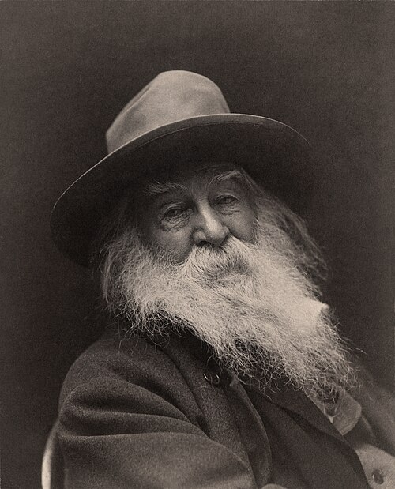
photograph by George C. Cox, 1887
Walt Whitmanpoet · 1819–1892 · USA
Уолт Уитмен · born on Long Island, New York
Know:Leaves of Grass (1855), with Song of Myself; O Captain! My Captain!, about the death of Lincoln. The poet of democracy and ordinary people.
Unusual: he wrote in free verse, long lines without rhyme, and kept rewriting one book, Leaves of Grass, all his life. In the Civil War he nursed wounded soldiers in Washington hospitals.
🔎 Clues in a text: a printer and journalist from Brooklyn · one book, rewritten for 37 years · poems without rhyme · a nurse in the Civil War · a poem calling the dead President “Captain”
Lateral: the “Captain” in the poem is Abraham Lincoln.
daguerreotype, c. 1847
Emily Dickinsonpoet · 1830–1886 · USA
Эмили Дикинсон · born in Amherst, Massachusetts
Know: nearly 1,800 short poems, among them Because I could not stop for Death and “Hope” is the thing with feathers. Dashes, capital letters, unusual rhymes.
Unusual: she spent almost all her life in her family’s house in Amherst, dressed in white and rarely met visitors. Fewer than a dozen poems were printed in her lifetime; her sister found the rest in a drawer after her death.
🔎 Clues in a text: a woman who almost never left her father’s house · Massachusetts · a white dress · hundreds of poems found in a drawer · Death as a polite gentleman in a carriage
Lateral: her nickname: the Belle of Amherst.
Who is it? Match each clue to a person.
J. M. W. TurnerWalt WhitmanEdgar Allan PoeJohn ConstableEmily Dickinson
Drag a person to a clue, or tap the person and then the clue. Tap a filled clue to empty it.
His detective solved a crime in a Paris street 46 years before Sherlock Holmes.1
A miller’s son who painted a farm cart standing in a Suffolk river.2
Fewer than a dozen of her poems were printed while she was alive.3
A barber’s son who painted a steam train racing across a bridge in the rain.4
He nursed wounded soldiers and wrote a poem calling the dead President his captain.5
Homework · 60 min + Olympway checks
Tick each part when it’s done
Flashcards · deck V12 · culture, arts & media
Nineteen words from today
Flashcards first, then Learn. In Learn mode you type the English word.
Flashcards · deck V14 · culture figures
25 people: the Stuart age, the 18th and the 19th centuries
The front: the name, who they were, the century. Tap to flip: the back has the portrait, who the person was and what they are famous for, and the names to know (works, places, characters, people around them). The 13 new cards are the 19th century. In Learn mode you type the name.
Задание 4 · 5 баллов5 gaps · 6 min
Homework text 1 · Three sisters on the moors
Заполните пропуски в тексте, преобразовав данные в скобках слова таким образом, чтобы они лексически и грамматически соответствовали тексту.
Three sisters on the moors
In 1820 the Reverend Patrick Brontë moved with his wife and six small children to Haworth, a village on the edge of the Yorkshire moors. Their childhood was TRAGEDY1: their mother died the next year, and the two eldest girls died after a terrible time at a boarding school. The four children who were left, Charlotte, Branwell, Emily and Anne, grew up in a small stone house next to the churchyard, writing tiny books about IMAGINE2 kingdoms with their own wars, kings and newspapers.
As young women the sisters worked as teachers and governesses, and they hated it. In 1846 they paid to publish a book of their poems under the names Currer, Ellis and Acton Bell. It sold only two copies: a DISAPPOINT3 start. But the next year all three sisters published novels. Charlotte’s Jane Eyre, the story of a poor governess who falls in love with her employer, was a huge SUCCEED4, and for a while London argued about the true IDENTIFY5 of the mysterious Bells. Within two years Branwell, Emily and Anne were dead. Charlotte lived until 1855. Today their home is the Brontë Parsonage Museum.
🔎The signal for each gap
1 tragic: was ___ → adjective: tragedy → tragic.
2 imaginary: about ___ kingdoms → adjective. Not real → imaginary. (Imaginative = full of ideas: the children were imaginative, the kingdoms were imaginary.)
3 disappointing: a ___ start: the start causes the feeling → -ing.
4 success: a huge ___ → noun. Successful would need a noun after it.
5 identity: the true ___ of → noun: identify → identity.
Задание 4 · 5 баллов5 gaps · 6 min
Homework text 2 · The boy in the factory
Заполните пропуски в тексте, преобразовав данные в скобках слова таким образом, чтобы они лексически и грамматически соответствовали тексту.
The boy in the factory
In 1824, when Charles Dickens was twelve, his father was sent to a debtors’ prison in London. The boy had to leave school and work ten hours a day in a factory by the river Thames, sticking labels on pots of shoe polish. He never forgot the HUMILIATE1, and he told almost nobody about it, not even his own children.
Years later those months became the heart of his work. His novels were ORIGIN2 published in monthly parts, and readers waited for each new part with enormous EXCITE3. In them, children are hungry, cold and alone: Oliver Twist is born in a workhouse and is punished for asking for more food. Dickens wanted his readers to see the POOR4 of London’s streets, and many of them saw it for the first time through his eyes.
In A Christmas Carol (1843) he created a miser, Ebenezer Scrooge, who is visited by three ghosts on Christmas Eve. The story was written in six weeks, and its picture of a family Christmas is still FORGET5 today.
🔎The signal for each gap
1 humiliation: forgot the ___ → noun: humiliate → humiliation.
2 originally: were ___ published: between be and a past participle → adverb: origin → original → originally.
3 excitement: with enormous ___ → noun: excitement.
4 poverty: the ___ of London’s streets → noun. An irregular one: poor → poverty.
5 unforgettable: is still ___ → adjective. The meaning is “you can’t forget it” → unforgettable (double t).
Задание 9 · 10 баллов1 text · 5 questions
The mathematician and the rabbit hole · 7 min
👩🏫 Teacher only · key · check next lesson
1 Lewis Carroll · 2 Charles Lutwidge Dodgson · 3 Alice Liddell · 4 the Thames (the Isis) · 5 Alice’s Adventures in Wonderland.
Not in the text: all five. 1 and 2 come from the name puzzle in paragraph 4 (Charles Lutwidge → Latin → reversed); 3 from “the head of his college” + “the same name as the heroine”; 4 from “up the river from Oxford”; 5 is the title she has to know. All five are on his card.
Next lesson’s warm-up: the 19th century retold without the timeline, then 3 V14 cards (Carroll, the Brontës, Twain).
Прочитайте текст и выполните задание к нему.
⏱ 7 min, exam pace🧠 all 5 answers are outside the text✍️ follow the format
He was born in 1832 in a small village in Cheshire, the eldest son of a clergyman in a family of eleven children. As a boy he entertained his brothers and sisters with puppet shows, magic tricks and home-made family magazines full of poems and drawings.
He was a brilliant student of mathematics, and he spent the rest of his life at one of the largest colleges of Oxford University, first as a student and then as a lecturer. He was shy, he had a stammer, and he never married. Under his own name he wrote serious books on logic and geometry, but he was also one of the first great amateur photographers of the Victorian age.
On a hot summer afternoon in 1862 he and a friend took the three young daughters of the head of his college on a rowing trip up the river from Oxford. To pass the time, he told the girls a story about a bored little girl who follows a white rabbit with a pocket watch down a rabbit hole. The middle sister, who had the same name as the heroine, begged him to write the story down. He spent many months on it, drew the pictures himself and gave her the handwritten book as a Christmas present.
A longer version was published in 1865 with illustrations by John Tenniel, and it became one of the most popular children’s books ever written. Six years later a sequel followed, in which the girl climbs through a mirror into a world where everything is reversed. For these books he invented a new name: he took his first two names, translated them into Latin, reversed their order and translated them back into English. Many of his characters, such as a grinning cat and a hatter who is always having tea, have become part of the English language.
1What name did the writer use for these books? Format: First Name Last Name
2What was his real name? Format: First Name Middle Name Last Name
3What was the name of the girl who asked him to write the story down? Format: First Name Last Name
4On which river did the rowing trip take place?
5What is the title of the book published in 1865?
💡Hint · where the answers come from
1–2: Charles Lutwidge → Latin Carolus Ludovicus → reversed Ludovicus Carolus → back into English.
3: the head of his college at Christ Church was Henry Liddell; the girl had the heroine’s name.
4: the river that flows through Oxford (at Oxford people call it the Isis). 5: the full title, not the short one people use.
Olympway check · era 5 · task 222 · 3 min
Dates in British history
Match each date with its event. Two events are extra. The first three are from Lesson 16, the last two from today’s story.
The Liverpool and Manchester Railway is openedQueen Victoria is proclaimed Empress of IndiaSinking of the TitanicCaptain Cook sets out on his first voyage to the PacificGeorge II succeeds his father on the throneThe Battle of Britain is fought in the air over southern EnglandThe Boston Tea Party
Drag an event to a date, or tap an event and then tap the date.
17271
17682
17733
18304
18765
💡Hint · anchors you already know
The Hanoverian spine: George I 1714 → George II 1727. Cook reached Australia in 1770, so his first voyage began two years earlier.
The Titanic and the Battle of Britain are 20th century: next lesson.
Olympway check · era 5 · task 175 · 5 min
The Declaration of Independence: one wrong word
Some lines have one wrong word. Write the correct word. If the line is correct, type ✓ (or ok).
2…in Philadelphia on July 4, 1776, which announced that the fourteen American colonies, then at war with the Kingdom of Great Britain, regarded themselves as independent sovereign states.
3Instead they formed a new nation: the United States of America.
6John Adams persuaded the committee to select Thomas Jefferson to compose the original scheme of the document, which Congress would edit to produce the final version.
7The word “Declaration of Independence” is not used in the document itself.
8The Declaration was a formal explanation of why Congress had voted to declare freedom from Great Britain, more than a year after the outbreak of the war.
10Independence Day is celebrated on July 4, the date that the Declaration of Independence was adapted.
11After ratifying the text on July 4, Congress issued the Declaration of Independence in several forms.
12It was first published as a printed sheet that was widely distributed and read to the congressmen.
15The best-known version, a signed paper on display at the National Archives in Washington, D.C., is popularly regarded as the official document.
💡Hint · what to look for
One fact you know from Lesson 16: how many colonies were there?
Word choice: a first version of a text is a draft; a name for something is a term; you declare independence (V8); adapted is a confusable: the word that sounds like it is adopted.
Line 12: if it was widely distributed, it was read to everyone. Line 15: one handwritten copy among several.
Olympway · word formation · task 190 · 5 min
Who pays when the house costs more?
Ten gaps from a 19th-century article about architects. Read past the hard words; the grammar around each gap tells you the part of speech.
1…and some CONSIDER ___ are mentioned which are new to us.
2According to Frémy-Ligneville, the most familiar AUTHOR ___ on the subject…
3…the architect incurs no RESPONSE ___ whatever for his estimates.
4…an expression of opinion, the CORRECT ___ of which he does not guarantee.
5…by the professional REPUTE ___ of the man who gives it.
6…he can go to another architect for an DEPEND ___ estimate.
7…and can have his plans and SPECIFY ___ examined by a competent authority.
8This ought to make him REASON ___ sure what his house will cost him.
9…he has another EXCEL ___ opportunity to protect himself.
10…and by doing so he GENERAL ___ suffers no damage.
💡Hint · the signals
Nouns: 1 some ___ are (plural!) · 2 the most familiar ___ (a person or source) · 3 no ___ · 4, 5 the ___ of · 7 plans and ___ (plural, like plans).
Adjectives: 6 an ___ estimate (from another architect, so not depending on the first one) · 9 another ___ opportunity. Adverbs: 8 ___ sure · 10 he ___ suffers.
Olympway · culture · task 301 · 3 min
Who wrote it?
Three passages from famous books. Who wrote each one? Two writers in the box are extra.
Charlotte BrontëOscar WildeJane AustenCharles DickensGeorge Eliot
Drag a writer to a passage, or tap the writer and then the passage.
“My lord,” answered the minister, “I will take the furniture and the ghost at a valuation. I have come from a modern country, where we have everything that money can buy… I reckon that if there were such a thing as a ghost in Europe, we’d have it at home in a very short time in one of our public museums.”1
Although I am not disposed to maintain that the being born in a workhouse is in itself the most fortunate circumstance that can possibly befall a human being, I do mean to say that in this particular instance, it was the best thing for Oliver Twist that could by possibility have occurred.2
Mrs. Reed came along the corridor, her cap flying wide, her gown rustling stormily. “Abbot and Bessie, I believe I gave orders that Jane Eyre should be left in the red-room till I came to her myself.”3
💡Hint
1: an American family buys a haunted English house: The Canterville Ghost. 2 and 3: the hero’s name is in the passage.
 George Frideric Handel
George Frideric Handel


 Charlotte Brontë
Charlotte Brontë